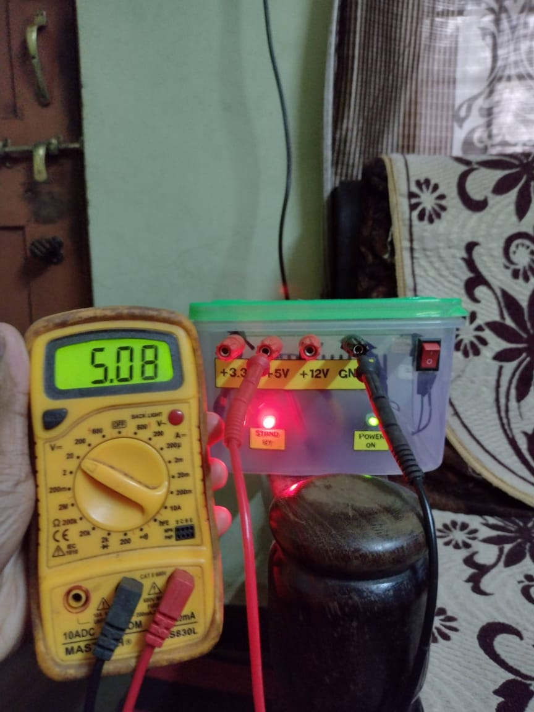
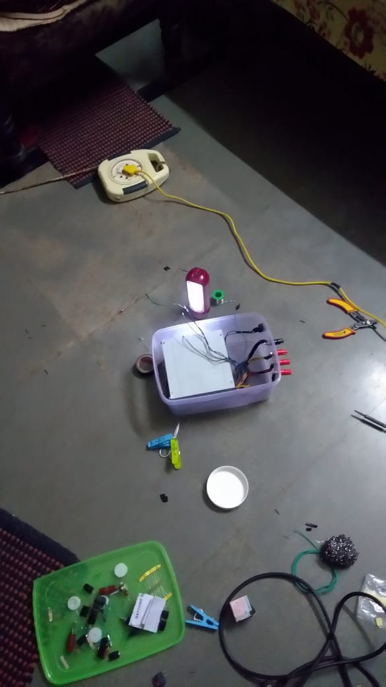

Since the bench power supply is pretty expensive, I had an old computer SMPS lying around so decided to convert this SMPS into a bench power supply. SMPS has 3 different voltages i.e 3volts, 5volts,12volts, these 3 voltages are common in electronics that can be used to turn on IC's, motors, Led's.To begin with, I planned a rough plan of the enclosure and required components to build the power supply. The components that I collected were banana connectors(male&female), Switches, led(for indication), and some good quality wires. There are 2 led's in the power supply. Green led represents "POWER ON" and red led represents "STAND-BY". Also added a switch such that every time i don't need to turn off the main switch .For 3 different voltages I made 3 separate terminals DC(3v,5v,12V) . Converting an SMPS into a bench power supply saved me around 1500-2500 rupees.
What is SMPS ?
A switched-mode power supply (SMPS) is an electronic circuit that converts power using switching devices that are turned on and off at high frequencies, and storage components such as inductors or capacitors to supply power when the switching device is in its non-conduction state. Switching power supplies have high efficiency and are widely used in a variety of electronic equipment, including computers and other sensitive equipment requiring stable and efficient power supply. A switched-mode power supply is also known as a switch-mode power supply or switching-mode power supply.
What is a bench power supply ?
A bench power supply provides DC (direct current) voltage to power a device under test such as a circuit board or electronic product. A bench or lab power supply typically sits on an engineer's work area or bench, hence the term “bench power supply
©Sid.tech2020